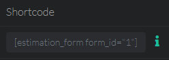

Introduction
Thank you for purchasing a license of this plugin.
As you will see very quickly, this one differs enormously from the usual Wordpress extensions, in that it is a real very complete software which runs on your Wordpress site.
This is intended to allow you to quickly and efficiently create all types of forms, including complex cost estimate forms that require various condition-based calculations.
This guide aims to help you understand how this application works in order to allow you to create your forms with peace of mind.
Installation
There are two ways to install a plugin on Wordpress.
The easiest way is to install it directly from the backend. In some cases the installation may fail, so you have to install the plugin using FTP software.
Install from Wordpress
Click the "plugins" link in the Wordpress sidebar, click the "Add new" button, then the "Upload Plugin" button.
Use the file upload field to upload the plugin file name "wp-estimation-payment-forms-builder.zip" .
Once the plugin upload finished, activate it by clicking the "Activate Plugin" button .
Install from FTP
You require a FTP software like Filezilla to be able to upload a plugin directly on the server.
Your server has a FTP account (host,username,password) that was used to install Wordpress onside and that will be necessary to upload the plugin.
First open the "wp-estimation-payment-forms-builder.zip" plugin file and extract its content.
Once connected to your server thanks to the FTP software of your choice, go to the folder "/www/wp-content/plugins/", open it and copy the folder "WP_Estimation_Form" inside.
Registration
Place the mouse cursor on the "E&P Form Builder" link in the Wordpress sidebar then click the "License" submenu link to open the license page of the plugin .
Fill your purchase code in the field and click the "Verify" button to register your license and activate automatic updates .
Manage your forms
Click the "E&P Form Builder" link in the Wordpress sidebar to open the forms list panel.
Main toolbar
At top right corner of the screen, you can see the main plugin toolbar. These buttons correspond to the elements that don't depend on a specific form :
- Global settings : This button opens the global settings of the plugin (like customer account page colors & texts, SMTP account etc...).
- Orders list : This button allows you to view and edit the orders submitted thanks to your forms.
- Customers : This button allows you view and edit all the customers account that are created when an order is submitted.
- View calendars : This button allows you to manage your calendars and the events registered by the date pickers of your forms.
- Return to the forms list : This button allows you to return to the list of the forms, from any panel of the plugin.
Forms list
This table lists all the existing forms.
Each form row contains some actions buttons. Simply move the cursor over them to see the action name :
- Edit this form : this button allows you to edit the corresponding form
- Preview this form : this button will open a new tab to allow you to test the form
- View orders : this button allows you to view the stored orders of this form
- Statistics : this button will show the statistics of the form (the paid or estimated total amounts along the months & years)
- Duplicate this form : This button allows you to duplicate the full form in one click. All the steps, items, links, variables are automatically duplicated. The prices & quantity calculations are automatically updated to use the new steps and items IDs.
- Form designer : this button open the Form Designer tool, to allow you to customize the visual appearance of the form
- Delete this form : this button will delete the selected form and the corresponding stored orders
When you create or edit form, you access to the form edition page :
In the left part of the form edition toolbar you can see the navigation buttons that allow you to switch between the form edition tools :
- Steps manager : The steps manager allows you to manage the steps process of your form and create link conditions.
- Last step : This button allows you to edit the final static step of the form
- Form settings : The form settings contains all the options relative to the current form (features, email, colors, text, currency etc ...)
- Variables : This tool allows you to create variables that can be used in the calculations and custom content of your form
- Orders : Manage the orders that were submitted from the current form
- Statistics : show the statistics of the form (the paid or estimated total amounts along the months & years)
- Designer : open the Form Designer tool to allow you to customize the visual appearance of the form
The right part of the form edition toolbar shows the actions relative to the current opened panel :
These buttons change when you navugate to a different tool panel by using the navigation buttons.
Steps manager
Edit or create a a form to access to the form edition page :
The steps manager is the panel opened by default. It shows all the steps of the form and allows you to link and create conditions to show each one depending on the wanted conditions.
A final static step is always added at end of the form, after the configured steps. To create a single step form, you simply need to edit the last step without creating additional steps.
Move the cursor over a step circle to see the possible actions buttons :
- Define as start step : Click this button to set this step as first step of the form
- Start a link to another step : Click this button to create a link that goes from this step to another one Youcan freely define the conditions of each link, so the plugin will detect the valid link to call the good next step
- Edit this step : Click this button to edit th content of the selected step
- Duplicate this step : This button allows you to duplicate the selected step and all its content in one click
- Remove this step : This button allows youto delete the selected step and its content
To link two steps, simply click the "Start a link to another step" button on the wanted step, then click the target step circle :
The pencil icon at middle of the link allows you to define the conditions of this link.
When the "Next step" button is clicked in a step, the plugin verifies the conditions of all the links that start from this step.
If there is a valid link, it will open its target step as next step. Otherwise it will show the final step.
If there are several valid links, it will select the one that has the less conditions defined.
Step edition
Click the "Edit this step" button on a step circle from the "Steps manager" panel to open the step edition panel :
The step layout is made up of rows. Rows are made up of columns, and columns contains the items components.
You can add new rows by clicking the green "+" buttons at top and bottom of the step content :
Simply move the cursor over a row to see its edition menu :
Simply click the "+" button you to add a new column in this row.
You can change the size of a column from its toolbar that is displayed when you move the cursor over it, and add new components inside by clicking its gray "+" buttons :
In the same way, simply move the cursor over a component to see its menu and edit it by clicking the pencil icon :
Components and columns can be moved and sorted by using drag & drop to create the wanted layout.
To be able to delete a column, you first need to remove the components it contains.
Simply click the pencil icon in the wanted component toolbar to edit its options.
Component edition
Once the pencil button clicked on a component, you access to the component edition panel :
The buttons of the toolbar allows you to navigate between the different tabs of the component edition panel :
All the options displayed in these tabs are dynamic and can depend on each other.
For example, if you select "Slider" in the "Type" option, the "Price & quantity" tab will show price and quantities related options, but if you select "Custom content" as type, the price and quantity options will be hidden.
You simply need to move your cursor over an option to see more information about it.
This documentation will not list all the available component options, but only some of them in order to explain some specific points :
- Step : This option allows you to easily move the selected component in another step.
- Type : This option allows you to change the type of the selected component without losing the values filled in the different options, allowing you to revert your choice keeping all the settings made.
- Radio group name : By filling the same value in the "Radio group name" option of several components, the user will be able to select only one of them at same time
- Price calculation : This option allows you to configure a dynamic unit price for the selected component.
- Quantity calculation : This option works exactly like the price calculation option, but it defines the default quantity of the selected component
- Modify a variable : This option works like the price and the quantity calculation options, but its result defines the value of a custom variable
- Apply reductions on quantities : This option allows you to define a different unit price depending on the quantity filled by th user. To use it, fill the wanted minimum quantity and the new unit price in the fields then click the "Add reduction" button
- Type of information : This option specific to the text fields allows the plugin to know the kind of data collected. It is used to detect the customer's email, but also to be able to send the contact information to Zapier, MailChimp etc ...
- Validation mask : This option is displayed when the "Type" option is set to "Text field" and the "Validation" option set to "Mask". It allows you to configure custom validation masks. You can find documentation about masks on the website of the used jQuery plugin : https://igorescobar.github.io/jQuery-Mask-Plugin/docs.html
- Show in email/summary : When this option is enabled, and if this item is selected, it will be displayed in the facultative summary displayed in the final step, and in the one sent by email to the admin and the customer when the form is submitted
- Tooltip text : The text filled in this option will be displayed in a tooltip when the user will move the cursor over this component
- Display price in title : If the component uses a static price, this price will be displayed in its title. But if its price is defined by a calculation, the price will be displayed in the title only when the component will be selected.
Form settings
The form settings panel is made of several tabs that contain the different options reative to the current form :
General
The "General" settings tab contains the main options of the form. Here are some details about some of them :
-
Order reference prefix :
This value defines the prefix that will be used to generate the reference of the orders submitted from this form.
This value must be unique for each form. -
Google Analytics ID :
Filling your Google Analytics ID allows you to track the visited steps of the form on your Analytics dashboard, thanks to anchors in the tracked URLs.
Ex: https://www.yourwebsite.com/the-form-page/#step-1-title -
Google Maps browser key :
Filling your Google Maps API key unlocks the "Map" component and the distance calculation options in prices and quantity calculations.
Here are the services that must be activated on the used API key :- Distance Matrix API
- Maps JavaScript API
- Places API
- Geocoding API
- Distances calculation mode : This option allows you to choose if the calculations must use road travels or fly travels to recover the distance of the travel duration between two addresses.
- Use steps visual builder : If this option is disabled, the components will be managed from a classical table list instead of the visual builder
- Automatic next step : If this option is enabled, when a step has its "Selection required" option activated and when all the components inside have the same "Radio group" name, the next step button will be hidden, and the next step will be called as soon as a component will be selected.
-
Add a button "Save form to finish later" :
This option adds a button at top of the form that allows the user to save the form progression to be able to continue it later.
The plugin uses the browser local storage to save the progression of the form. - Distances calculation mode : This option allows you to choose if the calculations must use road travels or fly travels to recover the distance of the travel duration between two addresses.
Date & currency
This panel contains all the options relative to the dates, time, currency and price separators.
Texts
The options of this panel allows you to modify all the texts used in the form.
This panel contains all the options relative to the email & pdf file sent to the admin and customer at end of the form :
-
Admin email :
Fill your email email address in this option to receive the orders by email when the form is submitted.
You can fill several addresses separated by comma to send it to several addresses. -
Email content :
Both admin and customer's email content template are fully editable by using WYSIWYG editors.
The first button "Add a dynamic value" button allows you to show the value/quantity/price of any element of the form in your custom content :
The second button "Add a shortcode" allows you to place predefined elements (like total price, summary table etc...) in your content :
-
Admin email :
Fill your email email address in this option to receive the orders by email when the form is submitted.
You can fill several addresses separated by comma to send it to several addresses. - Send contact to Mailchimp / MailPoet / GetResponse : These options allow you to send the contact information (detected thanks to the "Type of information" option of the text fields) to the wanted service.
- Send contact as soon the email field is filled : When this option is enabled, the contact information will be sent to the configured MailChimp/MailPoet/GetResponse list as soon as the step that contains the email field is finished.
Last step

This panel contains all the options relative to the static final step of the form.
- Final redirection : If you fill a URL in this option, it will be called once the form submitted.
- Conditions on redirection : This option allows you to configure different possible final redirection and their corresponding conditions
- Apply V.A.T : Use this option to configure a tax that will be applied on the final total price of the form.
-
Use reCaptcha :
This option allows you to configure a Goggle Recaptcha 3 protection for your form.
This is a non-friction system, the form will not ask the user to fill any visual captcha to work. - Download order as PDF : This option allows the user to download its order as PDF as soon as the final button of the form is clicked.
-
Woo Commerce :
Use these options if you want to assign woo products to some components of the form and add automatically add them to the woo cart at end of the form .
The products will be added to the Woo cart with the price of the corresponding form components. You can freely use price calculations to change their prices depending on conditions. -
Zapier :
This option allows you to send the values of the wanted components to Zapier when the form is submitted. It allows you to use Zapier to pass the data to any CRM or external service.
Once this option enabled, you will see a new option named "Send as variable" in the component edition panel, to allow you to choose which values must be sent.
To use this option, you first need to create a GET web hook on Zapier, then fill this hook url in this option. Zapier will ask you to send the data once to be able to detect the parameters to collect. Simply save your form, preview it and fill it to the end to allow Zapier to detect the sent data and finalize the web hook configuration. -
Use subscription :
When this option is enabled, a new option "Price mode" will be displayed on the component edition panel, to allow you to define if its cost is a part of the single total or of the subscription total.
The result of the form can be a single total cost + a subscription cost at same time. It also works with payment (the single cost is paid immediately, and the subscription starts the next month/week/day, depending on the choosen frequency). You can also choose in the main progress bar follow the single or the subscription total cost amount. -
Use Paypal payment :
Use this option to configure a Paypal account to receive the online payments.
A Business Paypal account is required to work with subscriptions.
By default, the order is sent as soon as the paypal button is clicked, even of the payment is not validated.
To send the order only when the payment is verified, you need to use the "IPN" paypal option and configure the mentioned URL as IPN callback on Paypal (See Paypal IPN documentation) -
Use Stripe payment :
Use this option to configure a Stripe account to receive the online payments.
Once your Stripe account created, simply copy and paste your Stripe keys (live or test ones) in the corresponding options to activate Stripe payment.
Please note that the live keys require a "HTTPS" protocol, it will not work if SSL isn't activated. -
Use Razorpay payment :
Use this option to configure a Razorpay account to receive the online payments.
Once your Razorpay account created, simply copy and paste your Stripe keys (live or test ones) in the corresponding options to activate Razorpay payment.
Last step
This panel contains the options that allow you to configure online payment at end of your form.
Summary
This panel contains all the options relative to the summary that can be displayed in the final step of the form and sent by email to admin and customer.
Discount coupons
This panel allows you to create reduction codes that can be filled in the final step of the form by the customers to apply the corresponding reduction.
Each discount coupon can be defined as fixed amount or percentage, and you can freely define their maximum number of use.
When a discount coupon has no more possible use, it is automatically deleted by the plugin.
GDPR
The GDPR option allows you to add a link in the customer's email that allows the customer to log in to be able to see his data and modify his information.
To be ale to use this option, you first need to enable the "Customer account management" option in the "Global settings" panel of the plugin.
Once the GDPR option enabled, you will be able to customize the link that will be displayed in the email sent to the customer.
If the email filled by the customer in the form is already stored, a password (sent by email) will be asked to him .
Design
This panel contains all the options that allow you to customize the appearance of the form .
Colors
All the colors used in the form can be modified from this settings panel.
Global settings
You can open the global settings panel by clicking the gear icon in the main toolbar of the plugin :
The global settings modal is made of 3 tabs :
General
This tab contains the main global settings. Here are details about some of them :
-
Customer account management :
This option allows you to enable the GDPR option in the wanted forms.
If the email filled by the customer in the form is already stored, a password (sent by email) will be asked to him .
Once this option enabled, you need to select an existing Wordpress page in the "Account management page" option.
The customer account system will be integrated to this page . - Encrypt data in the database : When this option is enable, all the customers information will be encrypted in the database.
- Admin email : This email will be used as sender address when the password recovery email will be sent to a user
- Use SMTP to send emails : This option allows you to configure an existing SMTP email account. When it is enabled, the emails are directly sent from the configured account, and not anymore from the server itself.
Customer account texts
You can define all the texts used in the customer account page from the options of this panel .
Main colors
These colors are essentially used in the customer account page.
Manage your orders
To view the stored order of a specific form, you simply need to click the "View orders" button from the forms list panel, or click the "Orders" button in the form toolbar from the form edition panel :
This panel lists all the orders submitted by the current form :
The actions buttons in each order row allow you to :
- View the order
- Edit the order
- Download the order as pdf file
- View the corresponding customer account
- Delete the order
When you click the "View order" button, you will be able to modify the status of this order, edit it and send it by email to the customer.
When you edit an order, you freely modify the existing items names and price, and use the "+ Item row" and "+ Step row" to add new rows to the summary table.
The "Modify total" button allows you to change the single total price, the subscription price and the VAT price (when the corresponding options are enabled in the form settings).
Manage your customers
Simply click the customer button in the main toolbar of the plugin to open the customers list panel :
This tables lists all the customers account that were automatically created when orders were submitted in the different forms.
The plugin uses the email address to detect if a customer account already exists or not .
Simply click the pencil icon in the target customer row to edit it .
The customer panel allows you to see and modify all the information of the selected customer.
It also lists all the orders of this customer, submitted by any E&P form.
Prices & quantity calculations
Both prices calculations, quantity calculations and variables calculation use the same awesome system :
The custom calculation system uses JavaScript language.
It supports any Javascript syntax and functions, like the Math object ones.
In addition to the Javascript language, shortcodes are added which are specific to this plugin.
The [price] shortcode is the result of the calculation, so a calculation looks like this :
[price] = 110.00
The other shortcodes are used to recover the value, price or quantity of any item or step of the form and use it in the calculation.
You don't need to write them manually : simply click the "Add a value" button above the calculation field to visually select the wanted element and attribute.
The plugin will automatically generate the corresponding shortcode in the calculation field :
[price] = [item-1_value]
The main operators to use are :
- + : addition
- - : substraction
- * : multiplication
- / : division
To create conditions, click the "Add a condition" button to access to the condition panel :
Simply use the "Add a condition" button and the conditions dropdowns to create the wanted conditions.
You can also choose if all the conditions must be filled, or if only one of them must be filled to consider the condition as true, by using the dropdown placed at top of the conditions list.
Once the "Save" button clicked on the conditions panel, the plugin automatically generates the condition code in the calculation field :
[price] = 10
if([item-1_isChecked] && [item-2_value] < 25) {
}
Simply fill the wanted conditional price between the two braces :
[price] = 10
if([item-1_isChecked] && [item-2_value] < 25) {
[price] = 20
}
In this example, the default unit cost of the current item will be $10, but if the item 1 is selected and if the value filled in the item 2 is inferior to 25, its price will become $20.
As explained, custom calculations support any JS syntax, so you can even create conditions in conditions, and use "else" statement :
if([item-1_isChecked]) {
if([item-2_isChecked]){
[price] = 20
} else {
[price] = 10
}
}
The "Add a distance" button will be available only if the "Google Maps API key" option is filled in the form settings.
It allows you to recover the number of miles/km or the travel duration between the addresses that come from the text fields of your form.
The plugin uses the "Type of information" option of the text fields of the form to detect the available address fields.
The result will be a shortcode like [distance-1-2] in the calculation code, that will return the calculated distance when this calculation will be executed.
The "Date difference" button allows you to recover the number of days between the dates selected in two datepickers of the form, and use it in your calculation.
Use variables
Click the "Variables" button in the form edition panel toolbar to open the Variables panel :
This panel allows you to create custom variables that can be used in the calculations and the conditions of your form.
You can choose to modify a variable when a specific component is selected by using the "Modify a variable" option in the "Price & Quantity" tab of the target component edition panel.
You can create a new variable by clicking the button "Add a variable", or editing an existing one by clickig the pencil icon on its row.
Each variable has a title and a type (interger number, float number or text).
The variables values can be displayed in "Custom content" components and in email content by using the "Add dybnamic value" button in the editor toolbar.
Booking system
This plugin comes with a complete booking system and calendars management system.
Calendars management
Click the calandar icon in the main toolbar of the plugin to open the calendars management panel :
The calendar panel allows you to view the registered events of your different calendars :
Let's have a look on the calendars panel toolbar :
-
Events categories :
This tool allows you to create different categories that can be applied to the events of the calendar.
Each category can have its own color, to allow you to easily distinguish the different types of events in the calendar view. - Default reminders : This option allows you to configure email remininders that will automatically be sent to the users at the wanted moment before the tevent start date.
- Default reminders : This option allows you to configure email remininders that will automatically be sent to the users at the wanted moment before the tevent start date.
- Available days of week : This tool allows you to define the days that can be selected in the date pickers that are linked to the selected calendar.
- Available hours : This tool allows you to define the hours that can be selected in the time pickers that are linked to the selected calendar.
- Export events : This button allows you to export all the events of the selected calendar as csv file.
- Calendar : This dropdown allows you to switch between the different created calendars.
- Add a calendar : Click this button to create a new calendar that can be assigned to the date pickers of your forms.
- Delete : Click this button to delete the selected calendar.
Simply click an empty case in the calendar view to create a new event at this date.
To edit an event, simply click it from the calendar view :
The sidenar panel contains all the details about the selected event.
Here are details on some of these options :
- Full day : This option will remobe the "End date" option and will use the full selected day for the current event.
- Busy date : If this option is enabled, the users will not be able to select this date in the datepickers that are assigned to this calendar.
- Corresponding order : This option allows you to view and modify the form order associated to this event
Assign a calendar to a date picker
To assign a calendar to a date picker of a form, you need to edit it and use its "Calendar" dropdown to select the target calendar :
When a calendar is assigned to the date picker, the disabled days and hours of the calendar will be disabled in the date menu displayed in the form .
Here are details on some of these options :
- Register a new event : When this option is enabled, an event will be created in the selected calendar at this date when the form will be sent.
- Category of the event : Choose the category that will be applied to the created calendar event. Categories can be edited from the calendars management panel.
- Set date as busy : If this option is enabled, and if the number of busy event at this date is equal to the value filled in the "Max events at same time" option, the user will not be able to select this date anymore.
- Event duration : Use this option to define the duration of the event that will be created in the calendar.
Use with Woocommerce
This plugin allows you to assign products from Woocommerce to the components of your forms, and automatically add them to the Woocommerce cart when the form is submitted.
To be able to do that, you first need to enable the "Add selected items to cart" option in the "Last step" tab of the form settings :
Please note that these options are only displayed when the Woocommerce is installed and activated.
Once done, you can use the "Woo product" option from the component panel (on priced components types like checkbox, image, button, slider etc...) to assign an existing Woo product to this component.
Simply start to fill the target Woocommerce product in the field and use the auto-completion menu to select it :
Then you can freely modify its price or create a price calculation. The product will be added to the Woocommerce cart with the price of the selected component.
Only Woocommerce products can be added to the Woocommerce cart. All the other data is sent to the admin and stored by the plugin when the form is submitted.
The reference of the sent order will be added as attribute to the Woocommerce product in the Woocommerce order, to allow you to find the corresponding data.
You can also whoose to add the full form summary as attribute of the Woocommerce product in the Woocommerce order.
Import & Export data
This plugin comes with a powerful import & export system that allows you to transfer all your forms/calendars/customers/orders data from a website to another one without having to reupload any image file or change any URL in the settings.
To export your data, simply click the "Export forms" button from the forms list panel :
The plugin will open the export modal that allows you to choose if you want to include stored orders and discount coupons to the exported data :
Then click the button "Downloaded the exported data" to download a zip file that contains a json file and all the images used in the form.
If you use OSX, the downloaded zip file will be automatically extracted in a folder automatically created by the O/S.
To be able to import it, you must compress all the files contained in this folder in a zip file.
This zip file must only contain the json file and image files, not any folder.
Integrate a form in pages
To integrate a form in a Wordpress page, you simply need to paste its shortcode in the page content, where you want to place it :
[estimation_form form_id="1"]
Click the "Shortcode" button in the row of the target form from the forms list panel to easily generate the shortcode :
Here are the options of the Shortcode modal :

-
Displaying :
This option allows you to choose if the form must be displayed in the page content, in fullscreen or as a popup.
If you want to use it as modal, you will need to paste the form shortcode with the popup attribute, then add the css class displayed in the Shortcode modal to the button or link that must open the popup.
Example of shortcode :[estimation_form form_id="1" popup="true"]
Example of css class added to a link to open the form popup :<a href="#" class="open-estimation-form form-1">Open Form</a>
-
Start step :
This dropdown allows you to define another start step than the default one.
It allows you to use a same form with different start step on different pages of your website.